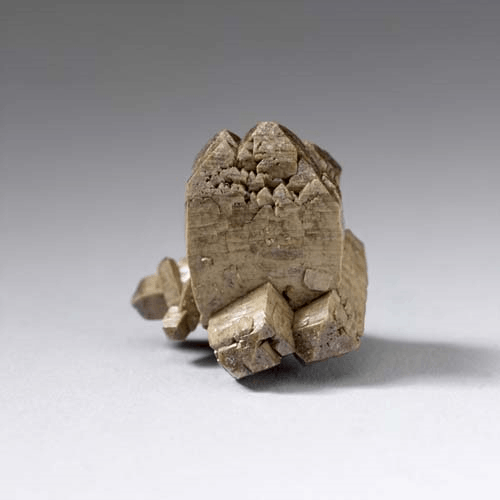
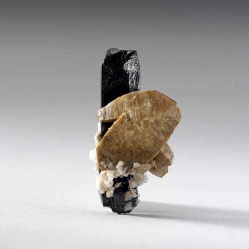
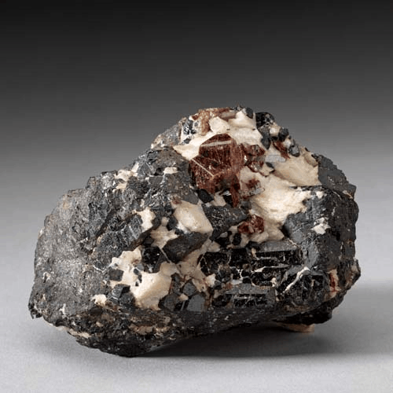

Zircon - ZrSiO4
Nesosilicates




Habit: Reddish brown, yellow, green, blue, gray or colorless. Prismatic to dipyramidal crystals. Vitreous to adamantine luster, but greasy when metamict; transparent to opaque. White streak.
Environment: An accessory mineral in igneous and metamorphic rocks. Large crystals found in mafic pegmatites and carbonatites; also occurs in sedimentary rocks and alluvial heavy-mineral sands.
Etymology: From the Arabic zarqun, which is thought to derive from the Persian zar, for "gold," and gun, meaning "color." Zircon has been mined from the gem gravels of Sri Lanka for more than 2,000 years. It was used as a gemstone in Greece and Italy as far back as the sixth century ce.